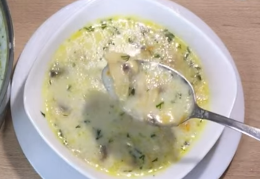

Рецепти з грибів
Повернутися назад
Мариновані опеньки
Мариновані шампіньйони
Мариновані білі гриби

Грибний суп з плавленим сиром
Грибний паштет
Салат з грибів і болгарського перцю на зиму
Карпатська грибна юшка
Картопля з грибами у духовці